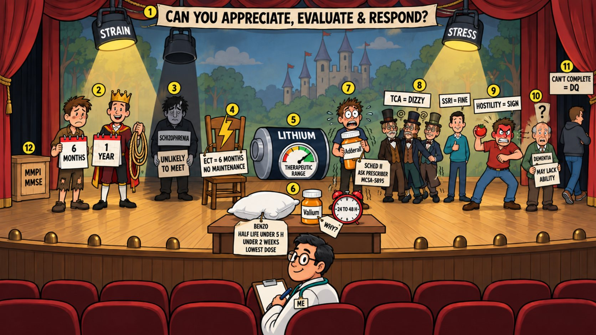

Card 11 of 13 · 49 CFR 391.41(b)(9)
The Stress-Test Theater
Psychological — appreciate, evaluate, respond; mood and psychotic disorders, ECT, lithium, sedatives, stimulants, antidepressants.

0:00 / 0:00
Press play — the narrator walks the scene and the spotlight follows to each numbered object. Click any paragraph to jump there. Space play/pause · ←/→ previous/next object · [/] previous/next card.
What this card covers
Psychological — appreciate, evaluate, respond; mood and psychotic disorders, ECT, lithium, sedatives, stimulants, antidepressants. Standard: 49 CFR 391.41(b)(9).
The hooks to keep
- Appreciate, evaluate, respond
- Six months for depression; one year after a severe episode
- Schizophrenia is unlikely to meet
- Benzos under five hours, under two weeks, lowest dose
- Adderall means ask the prescriber
- TCAs are dizzy, SSRIs are fine
Test yourself
10 questions on this card
Answer each question to see the explanation, its sources, and the cheat-sheet entry.